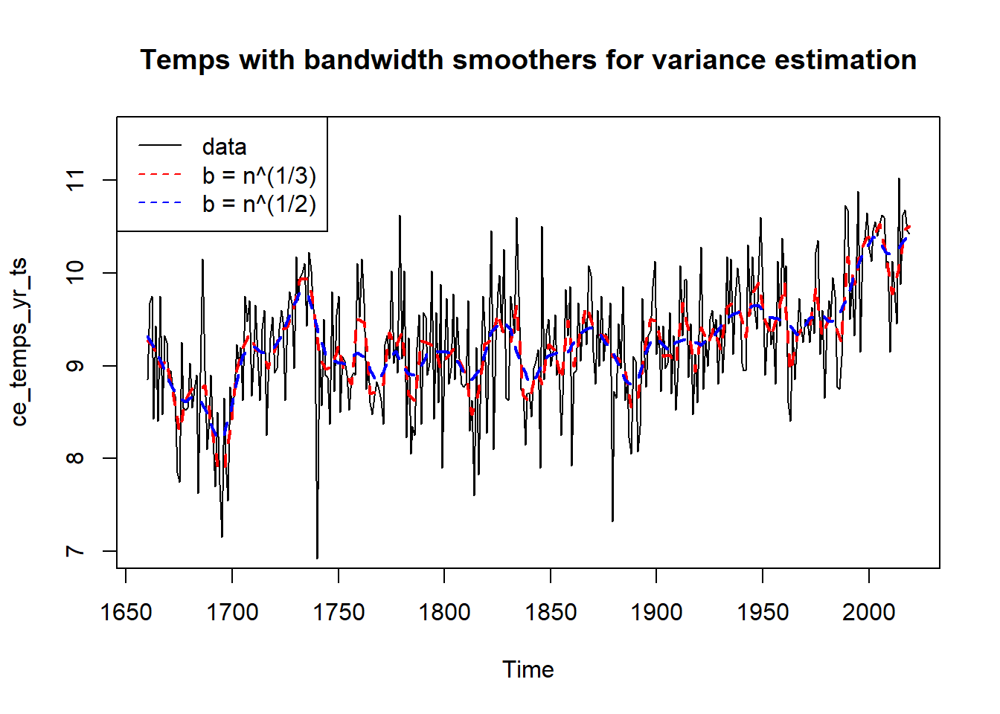
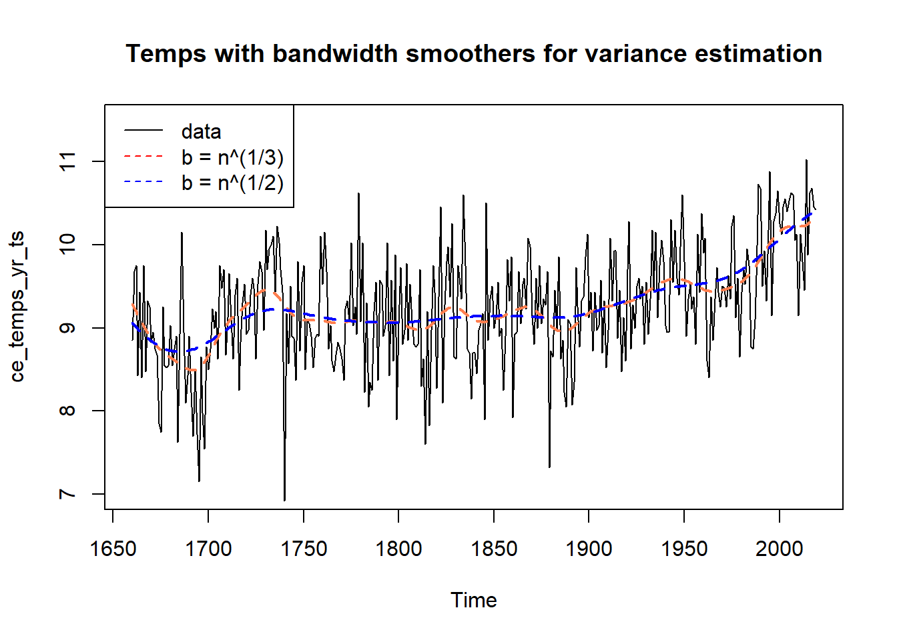
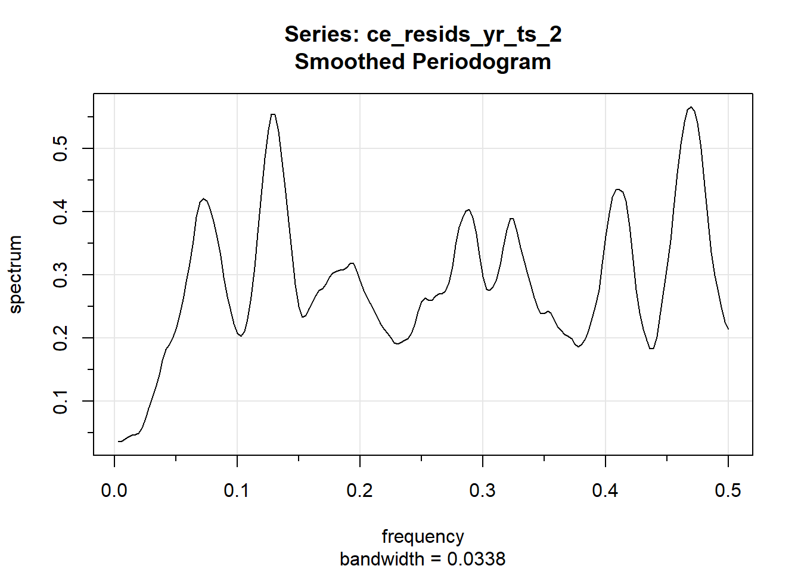
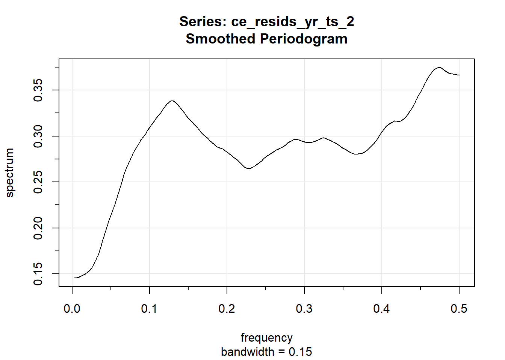
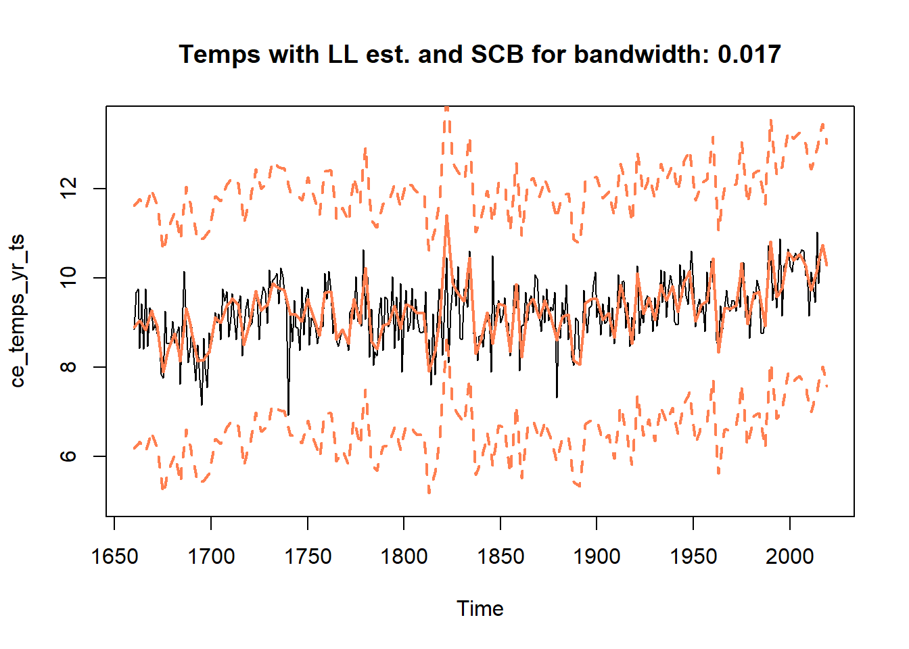
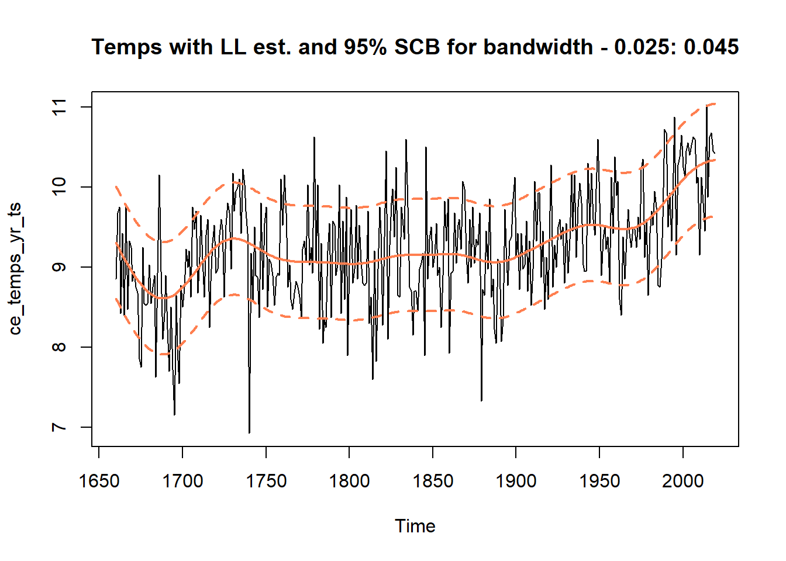
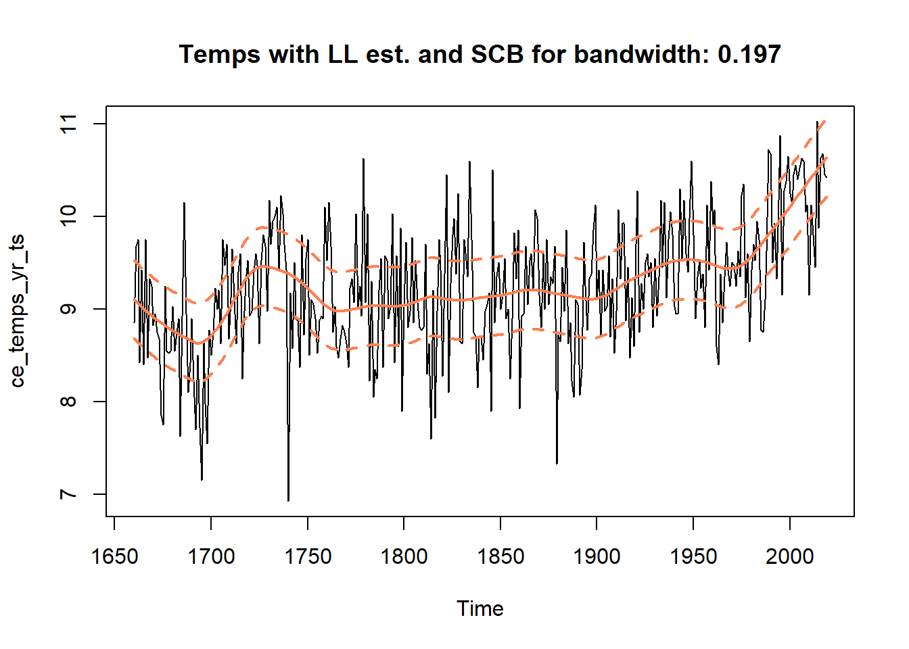
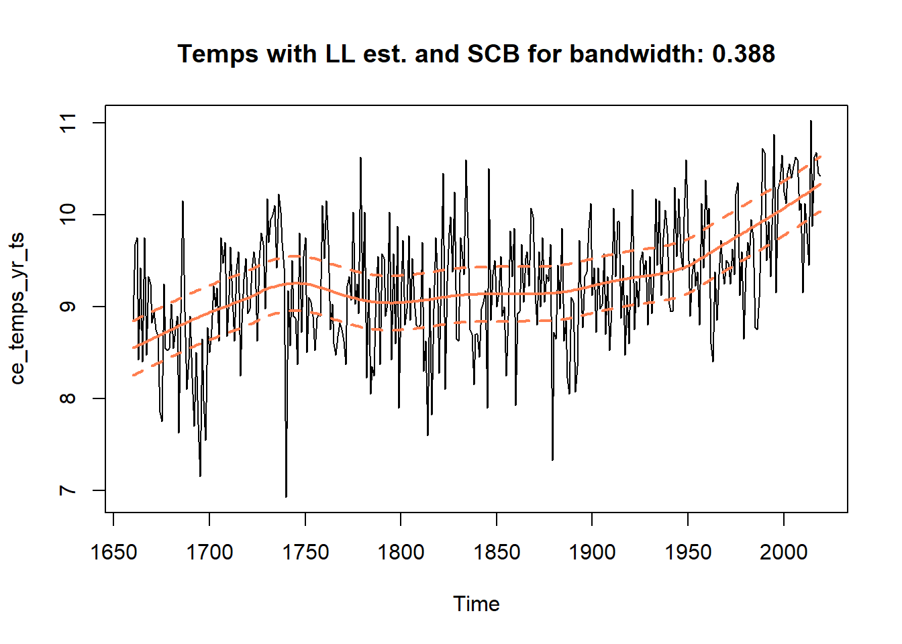
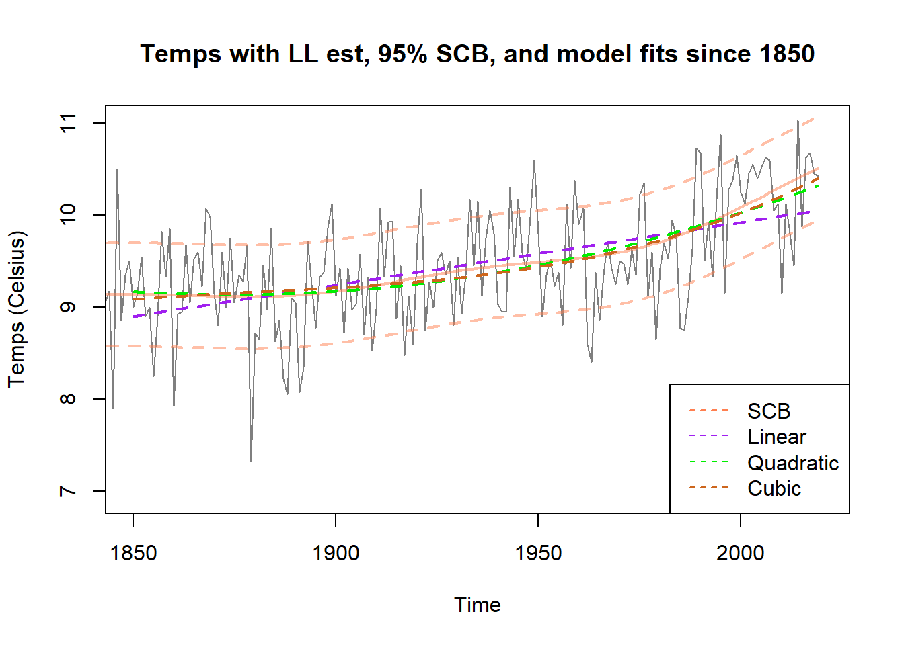

Last updated: 2020-03-06
Checks: 7 0
Knit directory: SCBs_Exploration/
This reproducible R Markdown analysis was created with workflowr (version 1.4.0). The Checks tab describes the reproducibility checks that were applied when the results were created. The Past versions tab lists the development history.
Great! Since the R Markdown file has been committed to the Git repository, you know the exact version of the code that produced these results.
Great job! The global environment was empty. Objects defined in the global environment can affect the analysis in your R Markdown file in unknown ways. For reproduciblity it’s best to always run the code in an empty environment.
The command set.seed(20200222) was run prior to running the code in the R Markdown file. Setting a seed ensures that any results that rely on randomness, e.g. subsampling or permutations, are reproducible.
Great job! Recording the operating system, R version, and package versions is critical for reproducibility.
Nice! There were no cached chunks for this analysis, so you can be confident that you successfully produced the results during this run.
Great job! Using relative paths to the files within your workflowr project makes it easier to run your code on other machines.
Great! You are using Git for version control. Tracking code development and connecting the code version to the results is critical for reproducibility. The version displayed above was the version of the Git repository at the time these results were generated.
Note that you need to be careful to ensure that all relevant files for the analysis have been committed to Git prior to generating the results (you can use wflow_publish or wflow_git_commit). workflowr only checks the R Markdown file, but you know if there are other scripts or data files that it depends on. Below is the status of the Git repository when the results were generated:
working directory clean
Note that any generated files, e.g. HTML, png, CSS, etc., are not included in this status report because it is ok for generated content to have uncommitted changes.
These are the previous versions of the R Markdown and HTML files. If you’ve configured a remote Git repository (see ?wflow_git_remote), click on the hyperlinks in the table below to view them.
| File | Version | Author | Date | Message |
|---|---|---|---|---|
| Rmd | 378da5e | Adam Sun | 2020-03-06 | initial analysis SCBs file |
| html | 6c38059 | Adam Sun | 2020-03-06 | Build site. |
| Rmd | 0d6644f | Adam Sun | 2020-03-06 | initial file for SCBs analysis |
| html | 708785b | Adam Sun | 2020-03-05 | Build site. |
| html | 255e23e | Adam Sun | 2020-03-05 | Build site. |
| Rmd | 5053802 | Adam Sun | 2020-03-05 | wflow_publish(files = “weather_data_analysis.Rmd”) |
| html | cc3ac7c | Adam Sun | 2020-03-05 | Build site. |
| Rmd | f370a3e | Adam Sun | 2020-03-05 | initial analysis file |
| html | dc05739 | Adam Sun | 2020-02-22 | Build site. |
| Rmd | 149c433 | Adam Sun | 2020-02-22 | initial analysis file with updates to come |
Notes:
- Consider annual mean temps, i.e. 1660 to 2019 has 360 data points.
- Estimate sigma_hat_sq by looking at residuals of \(X_i - \mu_k(i)\), where \(\mu_i\) is based on local linear estimate approach with bandwidth \(k \in (\frac{1}{3}, \frac{1}{2})\), as per step (a) of 4.1: Implementation.
Q’s:
- Lowess in R uses “locally-weighted polynomial regression”. Can we assume these weights are correct?
- Should we consider annualized temps, i.e. taking mean of last 4 quarters but quarter over quarter?
(- Would we ever want equal weights instead of weights based on a kernel?)
ce_temps_path = "https://raw.githubusercontent.com/acloudysun12/SCBs_Exploration/master/data/ce_ssn_temp_mean_raw.txt"
ce_temps = read.table(ce_temps_path, header = TRUE) # we essentially ignore 1659
colnames(ce_temps) = c("Year", "Qtr1", "Qtr2", "Qtr3", "Qtr4")
ce_temps_yr = rowMeans(ce_temps[,2:5], na.rm = TRUE)
df_temps_yr = cbind(ce_temps, ce_temps_yr) %>%
select(Year, ce_temps_yr) %>% rename(Temp = ce_temps_yr)
ce_temps_yr_ts = ts(ce_temps_yr, frequency = 1, start = 1660)
kn_1 = floor(length(ce_temps_yr_ts)^(1/3))
kn_2 = ceiling(length(ce_temps_yr_ts)^(1/2))
plot.ts(ce_temps_yr_ts, main = "Temps with bandwidth smoothers for variance estimation", ylim = c(7, 11.5))
lines(lowess(ce_temps_yr_ts, f = kn_1/length(ce_temps_yr_ts)), lwd = 2, col = 2, lty = 2)
lines(lowess(ce_temps_yr_ts, f = kn_2/length(ce_temps_yr_ts)), lwd = 2, col = 4, lty = 2)
legend("topleft", legend = c("data", "b = n^(1/3)", "b = n^(1/2)"), col = c(1, 2, 4), lty = c(1,2,2))
| Version | Author | Date |
|---|---|---|
| cc3ac7c | Adam Sun | 2020-03-05 |
temps_LL_1 = lowess(ce_temps_yr_ts, f = kn_1/length(ce_temps_yr_ts))
ce_resids_yr_ts_1 = ce_temps_yr_ts - temps_LL_1$y
temps_LL_2 = lowess(ce_temps_yr_ts, f = kn_2/length(ce_temps_yr_ts))
ce_resids_yr_ts_2 = ce_temps_yr_ts - temps_LL_2$yNotes/Q’s:
- We use spectral density function to get estimate for \(\gamma(0)\) aka \(\hat\sigma^2\).
- What smoothing should be used for periodogram?
- what type of smoothing for periodogram? Modified Daniell okay? Looked at no smoothing, modified.daniell.c(4,4) (0.03 bandwidth), and modified.daniell.c(18,18) (0.15 banwidth). Seems sigma_sq_hat estimate is similar across any smoothing. We pick the largest estimate.
- Estimate of sigma_sq_hat should be 2*(area of periodogram), since it’s calculated in range of \(w \in (0, 1/2)\) but we want range \(w \in (-1/2, 1/2)\)?
- Is my periodogram approach correct? Why is there mention of the spectral density function = \(\sigma^2/(2\pi)\) in Part 5. oe this mean I shouldd multiply my periodogram estimate by \(2\pi\)?
- Should we use periodogram appraoch for variance estimate? Or should we use one of the variance estimates provided in equation (25)?
# Note ce_resids_yr_ts_1 is not used for estimating sigma_sq_hat since ce_resids_yr_ts_2 bigger
smooth_1 = kernel("modified.daniell", c(4,4))
round(1/(sum(smooth_1$coef^2) + sum(smooth_1$coef[-1]^2))/length(ce_temps_yr_ts), 3)[1] 0.034smooth_2 = kernel("modified.daniell", c(18,18))
round(1/(sum(smooth_2$coef^2) + sum(smooth_2$coef[-1]^2))/length(ce_temps_yr_ts), 3)[1] 0.15Iw_smooth_0 = mvspec(ce_resids_yr_ts_2, log = "no") # this uses no smoothing of periodogram
| Version | Author | Date |
|---|---|---|
| cc3ac7c | Adam Sun | 2020-03-05 |
Iw_smooth_1 = mvspec(ce_resids_yr_ts_2, kernel = smooth_1, log = "no") # this uses modified Daniell
| Version | Author | Date |
|---|---|---|
| cc3ac7c | Adam Sun | 2020-03-05 |
Iw_smooth_2 = mvspec(ce_resids_yr_ts_2, kernel = smooth_2, log = "no") # this uses modified Daniell
| Version | Author | Date |
|---|---|---|
| cc3ac7c | Adam Sun | 2020-03-05 |
sig_sq_hat_0 = 2*sum(Iw_smooth_0$freq[1] * Iw_smooth_0$spec)
sig_sq_hat_0[1] 0.2893024sig_sq_hat_1 = 2*sum(Iw_smooth_1$freq[1] * Iw_smooth_1$spec)
sig_sq_hat_1[1] 0.2896925sig_sq_hat_2 = 2*sum(Iw_smooth_2$freq[1] * Iw_smooth_2$spec)
sig_sq_hat_2[1] 0.2898102** \(\hat\sigma^2\) without smoothing: 0.289 **
** \(\hat\sigma^2\) with modified Daniell(4,4): 0.289 **
** \(\hat\sigma^2\) with modified Daniell(18,18): 0.289 **
Notes/Q’s:
- Not sure how to calculate Ruppert’s (1995) optimal bandwidth for MSE.
- Try a range of bandwidths as the optimal Ruppert bandwidth to see what results we get.
- Get variance correction factor (\(\hat\rho\)) for each bandwidth based on step (a) of 4.1: Implementation.
- \(\nu\) based on the sample variance of the errors (observed - fitted local linear estimate based on bandwidth)
- ** Final bandwidth based on \(2\hat\rho^{1/5}b_{Ruppert}\), trying different values for \(b_{Ruppert}\). **
- Try to figure out Ruppert’s 1995 optimal bandwidth for MSE?
b_ruppert_0 = 0.01
b_ruppert_1 = 0.02
b_ruppert_2 = 0.05
b_ruppert_3 = 0.10
b_ruppert_4 = 0.20
e_hats_0 = ce_temps_yr_ts - (2*lowess(ce_temps_yr_ts, f = b_ruppert_0)$y -
lowess(ce_temps_yr_ts, f = b_ruppert_0*sqrt(2))$y)
e_hats_1 = ce_temps_yr_ts - (2*lowess(ce_temps_yr_ts, f = b_ruppert_1)$y -
lowess(ce_temps_yr_ts, f = b_ruppert_1*sqrt(2))$y)
e_hats_2 = ce_temps_yr_ts - (2*lowess(ce_temps_yr_ts, f = b_ruppert_2)$y -
lowess(ce_temps_yr_ts, f = b_ruppert_2*sqrt(2))$y)
e_hats_3 = ce_temps_yr_ts - (2*lowess(ce_temps_yr_ts, f = b_ruppert_3)$y -
lowess(ce_temps_yr_ts, f = b_ruppert_3*sqrt(2))$y)
e_hats_4 = ce_temps_yr_ts - (2*lowess(ce_temps_yr_ts, f = b_ruppert_4)$y -
lowess(ce_temps_yr_ts, f = b_ruppert_4*sqrt(2))$y)
nu_0 = sum(e_hats_0^2)/length(ce_temps_yr_ts)
nu_1 = sum(e_hats_1^2)/length(ce_temps_yr_ts)
nu_2 = sum(e_hats_2^2)/length(ce_temps_yr_ts)
nu_3 = sum(e_hats_3^2)/length(ce_temps_yr_ts)
nu_4 = sum(e_hats_4^2)/length(ce_temps_yr_ts)
rho_hat_0 = sig_sq_hat_0/nu_0
rho_hat_1 = sig_sq_hat_0/nu_1
rho_hat_2 = sig_sq_hat_0/nu_2
rho_hat_3 = sig_sq_hat_0/nu_3
rho_hat_4 = sig_sq_hat_0/nu_4
b_final_0 = 2*(rho_hat_0)^(1/5)*b_ruppert_0
b_final_1 = 2*(rho_hat_1)^(1/5)*b_ruppert_1
b_final_2 = 2*(rho_hat_2)^(1/5)*b_ruppert_2
b_final_3 = 2*(rho_hat_3)^(1/5)*b_ruppert_3
b_final_4 = 2*(rho_hat_4)^(1/5)*b_ruppert_4** Final “optimal” bandwidths to try based on adjustments to Ruppert optimal bandwidth: 0.017, 0.042, 0.101, 0.197, 0.388. **
Notes/Q’s:
- Try all final bandwidths given the initial “optimal” bandwidths and following calculations of 4.1: Implementation.
- Try speeding up sim somehow?
set.seed(9980)
years = time(ce_temps_yr_ts)
calc_suprem_rnorm = function(rand_iter, b_final){
lowess_iter_b_1 = lowess(x = years, y = rand_iter, f = b_final)
lowess_iter_b_2 = lowess(x = years, y = rand_iter, f = b_final*sqrt(2))
return(mu_suprem = max(abs(2*lowess_iter_b_1$y - lowess_iter_b_2$y)))
}
num_sims = 10000
rnorm_sims = matrix(rnorm(num_sims*length(ce_temps_yr_ts), 0 ,1),
nrow = num_sims, ncol = length(ce_temps_yr_ts))
sup_mus_boot_0 = apply(rnorm_sims, MARGIN = 1, FUN = calc_suprem_rnorm, b_final = b_final_0)
sup_mus_boot_1 = apply(rnorm_sims, MARGIN = 1, FUN = calc_suprem_rnorm, b_final = b_final_1)
sup_mus_boot_2 = apply(rnorm_sims, MARGIN = 1, FUN = calc_suprem_rnorm, b_final = b_final_2)
sup_mus_boot_3 = apply(rnorm_sims, MARGIN = 1, FUN = calc_suprem_rnorm, b_final = b_final_3)
sup_mus_boot_4 = apply(rnorm_sims, MARGIN = 1, FUN = calc_suprem_rnorm, b_final = b_final_4)
interval_95_0 = quantile(sup_mus_boot_0, 0.95)*sqrt(sig_sq_hat_0)
interval_95_1 = quantile(sup_mus_boot_1, 0.95)*sqrt(sig_sq_hat_0)
interval_95_2 = quantile(sup_mus_boot_2, 0.95)*sqrt(sig_sq_hat_0)
interval_95_3 = quantile(sup_mus_boot_3, 0.95)*sqrt(sig_sq_hat_0)
interval_95_4 = quantile(sup_mus_boot_4, 0.95)*sqrt(sig_sq_hat_0)ce_temps_tilde_0 = 2*lowess(ce_temps_yr_ts, f = b_final_0)$y - lowess(ce_temps_yr_ts, f = b_final_0*sqrt(2))$y
ce_temps_tilde_1 = 2*lowess(ce_temps_yr_ts, f = b_final_1)$y - lowess(ce_temps_yr_ts, f = b_final_1*sqrt(2))$y
ce_temps_tilde_2 = 2*lowess(ce_temps_yr_ts, f = b_final_2)$y - lowess(ce_temps_yr_ts, f = b_final_2*sqrt(2))$y
ce_temps_tilde_3 = 2*lowess(ce_temps_yr_ts, f = b_final_3)$y - lowess(ce_temps_yr_ts, f = b_final_3*sqrt(2))$y
ce_temps_tilde_4 = 2*lowess(ce_temps_yr_ts, f = b_final_4)$y - lowess(ce_temps_yr_ts, f = b_final_4*sqrt(2))$y
temps_UB_0 = ce_temps_tilde_0 + interval_95_0
temps_LB_0 = ce_temps_tilde_0 - interval_95_0
temps_UB_1 = ce_temps_tilde_1 + interval_95_1
temps_LB_1 = ce_temps_tilde_1 - interval_95_1
temps_UB_2 = ce_temps_tilde_2 + interval_95_2
temps_LB_2 = ce_temps_tilde_2 - interval_95_2
temps_UB_3 = ce_temps_tilde_3 + interval_95_3
temps_LB_3 = ce_temps_tilde_3 - interval_95_3
temps_UB_4 = ce_temps_tilde_4 + interval_95_4
temps_LB_4 = ce_temps_tilde_4 - interval_95_4** Empirical coverage rate with 95% SCB for bandwidth = 0.017 – 0.997 **
** Empirical coverage rate with 95% SCB for bandwidth = 0.042 – 0.931 **
** Empirical coverage rate with 95% SCB for bandwidth = 0.101 – 0.703 **
** Empirical coverage rate with 95% SCB for bandwidth = 0.197 – 0.553 **
** Empirical coverage rate with 95% SCB for bandwidth = 0.388 – 0.386 **
Notes/Q’s:
- Why do empirical coverage rates seem quite low across most 95% SCBs?
- As bandwidths shorter, empirical coveragae better.
- Smallest bandwidth of 0.016 (around 6 years) has empirical coverage > 95%, while rest of empirical coverage rates are worse.
- How short would Ruppert (1995) optimal bandwidth be? Even shorter than 0.02?
- Is our sigma estimated with spectral density and periodogram too low? Should we try use Equation (25) estimates of \(\sigma\) instead?
Notes/Q’s:
- For each bandwidth tried, we plot time series, local linear estimates, and their SCBs.
plot(ce_temps_yr_ts, main = paste("Temps with LL est. and SCB for bandwidth:", round(b_final_0, 3)),
ylim = c(5, 13.5))
lines(as.numeric(years), ce_temps_tilde_0, lwd = 2, lty = 1, col = "coral")
lines(x = as.numeric(years), y = temps_UB_0, lwd = 2, lty = 2, col = "coral")
lines(x = as.numeric(years), y = temps_LB_0, lwd = 2, lty = 2, col = "coral")
plot(ce_temps_yr_ts, main = paste("Temps with LL est. and SCB for bandwidth:", round(b_final_1, 3)))
lines(as.numeric(years), ce_temps_tilde_1, lwd = 2, lty = 1, col = "coral")
lines(x = as.numeric(years), y = temps_UB_1, lwd = 2, lty = 2, col = "coral")
lines(x = as.numeric(years), y = temps_LB_1, lwd = 2, lty = 2, col = "coral")
plot(ce_temps_yr_ts, main = paste("Temps with LL est. and SCB for bandwidth:", round(b_final_2, 3)))
lines(as.numeric(years), ce_temps_tilde_2, lwd = 2, lty = 1, col = "coral")
lines(x = as.numeric(years), y = temps_UB_2, lwd = 2, lty = 2, col = "coral")
lines(x = as.numeric(years), y = temps_LB_2, lwd = 2, lty = 2, col = "coral")
plot(ce_temps_yr_ts, main = paste("Temps with LL est. and SCB for bandwidth:", round(b_final_3, 3)))
lines(as.numeric(years), ce_temps_tilde_3, lwd = 2, lty = 1, col = "coral")
lines(x = as.numeric(years), y = temps_UB_3, lwd = 2, lty = 2, col = "coral")
lines(x = as.numeric(years), y = temps_LB_3, lwd = 2, lty = 2, col = "coral")
plot(ce_temps_yr_ts, main = paste("Temps with LL est. and SCB for bandwidth:", round(b_final_4, 3)))
lines(as.numeric(years), ce_temps_tilde_4, lwd = 2, lty = 1, col = "coral")
lines(x = as.numeric(years), y = temps_UB_4, lwd = 2, lty = 2, col = "coral")
lines(x = as.numeric(years), y = temps_LB_4, lwd = 2, lty = 2, col = "coral")
| Version | Author | Date |
|---|---|---|
| 6c38059 | Adam Sun | 2020-03-06 |
kn_thm3_1 = round(length(ce_temps_yr_ts)^(5/8))
kn_thm3_2 = round(length(ce_temps_yr_ts)^(1/3))
breaks_kn_1 = c(seq(1, length(ce_temps_yr_ts), by = kn_thm3_1), length(ce_temps_yr_ts))
breaks_kn_2 = c(seq(1, length(ce_temps_yr_ts), by = kn_thm3_2), length(ce_temps_yr_ts))
df_Am_1 = df_temps_yr %>%
mutate(idx = seq(1, length(ce_temps_yr_ts), 1)) %>%
mutate(m = cut(idx, breaks = breaks_kn_1, labels = FALSE, include.lowest = TRUE)) %>%
group_by(m) %>% summarize(A_m = mean(Temp))
df_Am_2 = df_temps_yr %>%
mutate(idx = seq(1, length(ce_temps_yr_ts), 1)) %>%
mutate(m = cut(idx, breaks = breaks_kn_2, labels = FALSE, include.lowest = TRUE)) %>%
group_by(m) %>% summarize(A_m = mean(Temp))
sig_hat_1_Am_1 = sqrt(pi*kn_1)/(2*(length(breaks_kn_1)-1))*sum(abs(df_Am_1$A_m - lag(df_Am_1$A_m, 1)), na.rm = TRUE)
q3_norm = qnorm(p = 0.75, 0, 1)
sig_hat_2_Am_1 = sqrt(kn_1/(2*q3_norm))*median(abs(df_Am_1$A_m - lag(df_Am_1$A_m, 1)), na.rm = TRUE)
sig_hat_3_Am_2 = sqrt(pi*kn_2/(2*(length(breaks_kn_2)-1)))*sqrt(sum(abs(df_Am_2$A_m - lag(df_Am_2$A_m, 1))^2, na.rm = TRUE))Notes/Q’s:
- Applying Thm 3, we use \(k_n\) of 360^(5/8) for \(\hat\sigma_1\) and \(\hat\sigma_2\). We use \(k_n\) of 360^(1/3) for \(\hat\sigma_3\). - The values are 0.573, 0.466, and 2.238 respectively. - \(\hat\sigma\) estimate with spectral density vs Equations (25) are fairly different. Some are larger than spectral density estimated sigma_hat of 0.538. Some are smaller? Is my calc for variance estimate with sdf incorrect?
- Why are these three estimates so different from each other? Perhaps not enough sample size for asymptotic?
- Why are all 3 sigma hats also so different? sigma hat 2 sigma_hat seems closest to spectral density, but still larger.
- Instead of simple average for calculating \(A_i's\), should we be looking at residuals of local linear estimates?
Notes/Q’s:
- We re-calculate the 95% SCBs using the local linear estimate with supposed Ruppert optimal bandwidth of 0.05 (final optimal bnwidth of 0.1.
- Note a large discrepancy in empirical coverage rates of the 95% SCBs driven by the difference in estimated variances based on the 3 methods in Equation (25).
- ** Empirical coverage ranges anywhere from 85% to 99%. **
- We plot the three SCBs as well for comparison.
interval_95_1_Am = quantile(sup_mus_boot_2, 0.95)*sqrt(sig_hat_1_Am_1)
interval_95_2_Am = quantile(sup_mus_boot_2, 0.95)*sqrt(sig_hat_2_Am_1)
interval_95_3_Am = quantile(sup_mus_boot_2, 0.95)*sqrt(sig_hat_3_Am_2)
temps_UB_1_Am = ce_temps_tilde_2 + interval_95_1_Am
temps_LB_1_Am = ce_temps_tilde_2 - interval_95_1_Am
temps_UB_2_Am = ce_temps_tilde_2 + interval_95_2_Am
temps_LB_2_Am = ce_temps_tilde_2 - interval_95_2_Am
temps_UB_3_Am = ce_temps_tilde_2 + interval_95_3_Am
temps_LB_3_Am = ce_temps_tilde_2 - interval_95_3_Am
plot(ce_temps_yr_ts, ylim = c(6.5, 13),
main = paste("Temps with LL est. and SCBss for bandwidth:", round(b_final_1, 3)))
lines(as.numeric(years), ce_temps_tilde_2, lwd = 2, lty = 1, col = "black")
legend("topleft", legend = c("sigma_1", "sigma_2", "sigma_3"),
col = c("coral", "chartreuse", "deepskyblue"), lwd = c(2,2,2), lty = c(2,2,2))
lines(x = as.numeric(years), y = temps_UB_1_Am, lwd = 2, lty = 2, col = "coral")
lines(x = as.numeric(years), y = temps_LB_1_Am, lwd = 2, lty = 2, col = "coral")
lines(x = as.numeric(years), y = temps_UB_2_Am, lwd = 2, lty = 2, col = "chartreuse")
lines(x = as.numeric(years), y = temps_LB_2_Am, lwd = 2, lty = 2, col = "chartreuse")
lines(x = as.numeric(years), y = temps_UB_3_Am, lwd = 2, lty = 2, col = "deepskyblue")
lines(x = as.numeric(years), y = temps_LB_3_Am, lwd = 2, lty = 2, col = "deepskyblue")
| Version | Author | Date |
|---|---|---|
| cc3ac7c | Adam Sun | 2020-03-05 |
paste("empirical coverage sigma sdf:",
round(length(which(ce_temps_yr_ts <= temps_UB_2 & ce_temps_yr_ts >= temps_LB_2))/360, 3))[1] "empirical coverage sigma sdf: 0.703"paste("empirical coveragae sigma 1 (Eq 25):",
round(length(which(ce_temps_yr_ts <= temps_UB_1_Am & ce_temps_yr_ts >= temps_LB_1_Am))/360, 3))[1] "empirical coveragae sigma 1 (Eq 25): 0.867"paste("empirical coveragae sigma 2 (Eq 25):",
round(length(which(ce_temps_yr_ts <= temps_UB_2_Am & ce_temps_yr_ts >= temps_LB_2_Am))/360, 3))[1] "empirical coveragae sigma 2 (Eq 25): 0.839"paste("empirical coveragae sigma 3 (Eq 25):",
round(length(which(ce_temps_yr_ts <= temps_UB_3_Am & ce_temps_yr_ts >= temps_LB_3_Am))/360, 3))[1] "empirical coveragae sigma 3 (Eq 25): 0.992"
Playground
Notes/Q’s:
- Thoughts on playing with fake data, like suppose we added 2 degrees Celsius to all temps after 1990, etc.
ce_temps_yr_ts_fake = ifelse(time(ce_temps_yr_ts) >= 1900, ce_temps_yr_ts + 2, ce_temps_yr_ts)
plot(ce_temps_yr_ts_fake)
lines(lowess(ce_temps_yr_ts_fake, f= 0.1), lwd = 2, col = 2)
lines(lowess(ce_temps_yr_ts_fake), lwd = 2, col = 4)
| Version | Author | Date |
|---|---|---|
| cc3ac7c | Adam Sun | 2020-03-05 |
sessionInfo()R version 3.5.1 (2018-07-02)
Platform: x86_64-w64-mingw32/x64 (64-bit)
Running under: Windows 10 x64 (build 18362)
Matrix products: default
locale:
[1] LC_COLLATE=English_United States.1252
[2] LC_CTYPE=English_United States.1252
[3] LC_MONETARY=English_United States.1252
[4] LC_NUMERIC=C
[5] LC_TIME=English_United States.1252
attached base packages:
[1] stats graphics grDevices utils datasets methods base
other attached packages:
[1] forecast_8.9 fracdiff_1.4-2 tseries_0.10-47 scales_1.0.0
[5] forcats_0.3.0 stringr_1.4.0 dplyr_0.8.0.1 purrr_0.3.2
[9] readr_1.1.1 tidyr_0.8.1 tibble_2.1.3 ggplot2_3.2.1
[13] tidyverse_1.2.1 astsa_1.9
loaded via a namespace (and not attached):
[1] zoo_1.8-5 tidyselect_0.2.5 urca_1.3-0
[4] haven_1.1.2 lattice_0.20-35 colorspace_1.4-1
[7] htmltools_0.3.6 yaml_2.2.0 rlang_0.4.0
[10] pillar_1.4.2 glue_1.3.1 withr_2.1.2
[13] TTR_0.23-5 modelr_0.1.2 readxl_1.1.0
[16] quantmod_0.4-15 timeDate_3043.102 munsell_0.5.0
[19] gtable_0.3.0 workflowr_1.4.0 cellranger_1.1.0
[22] rvest_0.3.2 evaluate_0.11 knitr_1.20
[25] lmtest_0.9-37 parallel_3.5.1 curl_3.2
[28] broom_0.5.0 xts_0.11-2 Rcpp_1.0.2
[31] backports_1.1.5 jsonlite_1.5 fs_1.2.6
[34] hms_0.4.2 digest_0.6.21 stringi_1.4.3
[37] grid_3.5.1 rprojroot_1.3-2 quadprog_1.5-8
[40] cli_1.1.0 tools_3.5.1 magrittr_1.5
[43] lazyeval_0.2.2 crayon_1.3.4 whisker_0.3-2
[46] pkgconfig_2.0.3 xml2_1.2.0 lubridate_1.7.4
[49] assertthat_0.2.1 rmarkdown_1.10 httr_1.3.1
[52] rstudioapi_0.8 R6_2.4.0 nnet_7.3-12
[55] nlme_3.1-137 git2r_0.25.2 compiler_3.5.1